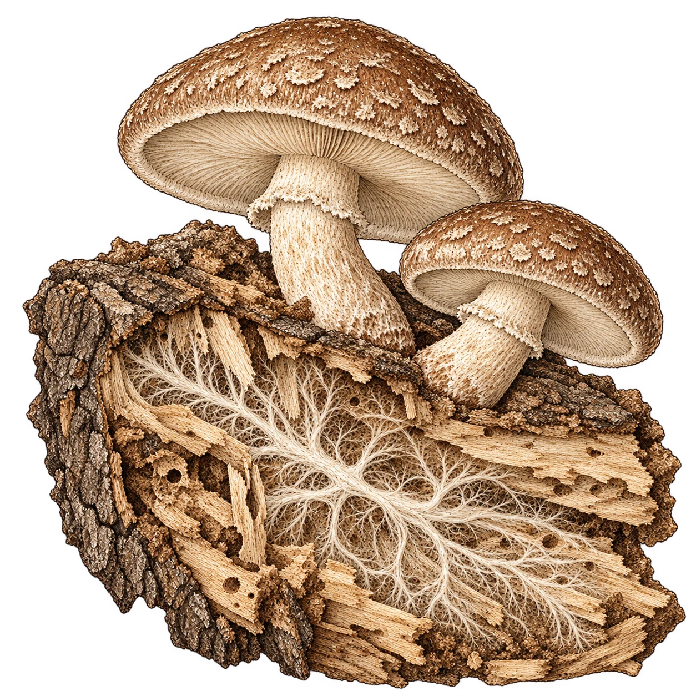
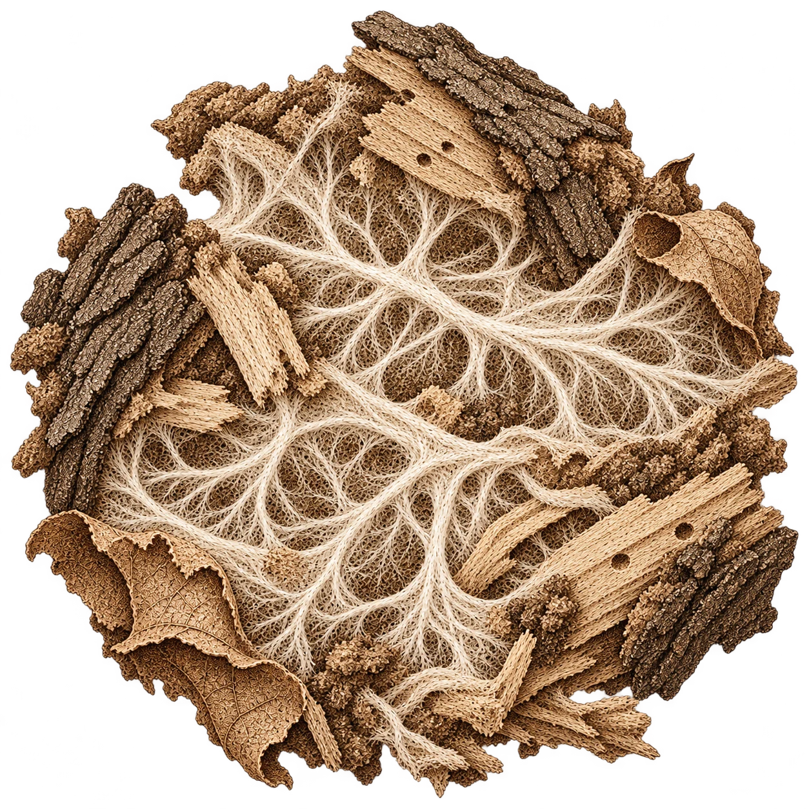
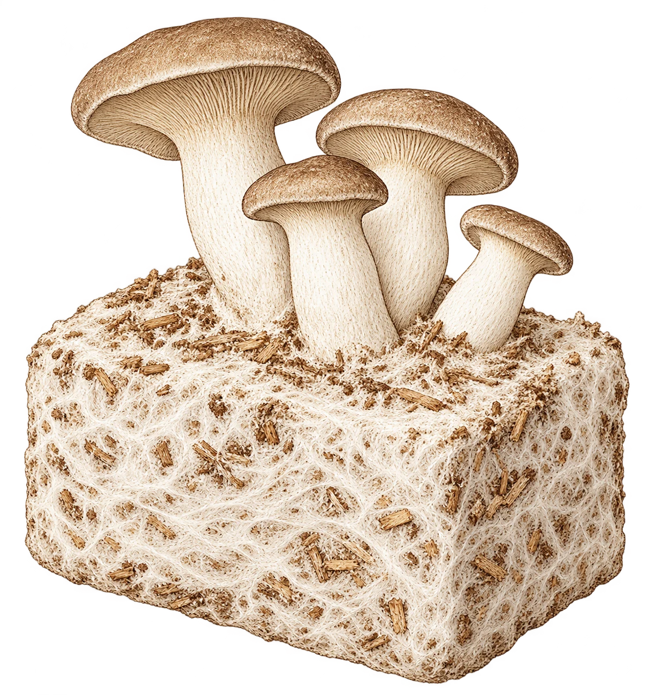
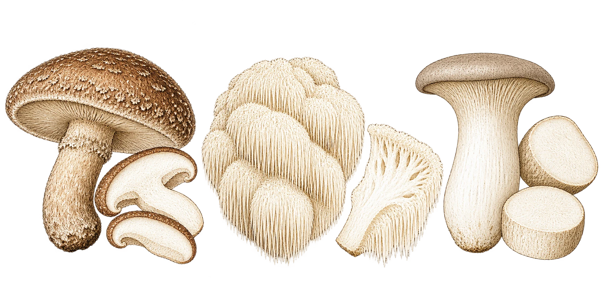

Shiitake
Lentinula edodesSombrero carnoso y pie más fibroso. En láminas, para una arepa; en piezas, para un caldo.
Arepa con maíz doradoEl cuaderno · Setas de la Peña
Una seta es la parte que vemos. Conocer el hongo también es mirar lo que crece antes, lo que transforma y lo que todavía nos queda por entender.


En los hongos que forman setas, buena parte del organismo es una trama de filamentos llamados hifas. Su conjunto forma el micelio. La seta es una estructura reproductiva: allí se producen las esporas. [1]
Los hongos no hacen fotosíntesis. Obtienen nutrientes de su entorno: liberan sustancias que descomponen el alimento fuera de sus células y después lo absorben. [1]
Algunos descomponen madera y restos vegetales. Otros se asocian con las raíces de plantas, en relaciones llamadas micorrizas. Son maneras distintas de vivir; conocer una especie ayuda a entender qué relación establece con su entorno. [2]
Micelio y seta nombran partes distintas del mismo hongo. El micelio puede seguir creciendo en el sustrato aunque no veamos setas.

El sustrato es el material del que se alimenta el hongo. En cultivo, se prepara y se inocula: se introduce micelio de la especie que se quiere desarrollar. Después viene un tiempo de crecimiento antes de la formación de setas. [3]
Elegir el sustrato y prepararlo para que el micelio pueda establecerse.
Durante la incubación, el micelio se extiende por el material y obtiene alimento.
Las condiciones de humedad, aire, temperatura y luz intervienen en esta etapa.
Las necesidades cambian entre especies y etapas. Esta es una lectura del proceso, no una receta de cultivo con tiempos o condiciones universales. [3]
Nuestro punto de partida en TenjoEl sombrero del shiitake, los dientes de la melena y el pie del eryngii dan tres puntos de partida para cocinar. Las fichas reúnen sus diferencias; las recetas proponen cómo llevarlas al plato.

Sombrero carnoso y pie más fibroso. En láminas, para una arepa; en piezas, para un caldo.
Arepa con maíz doradoDientes colgantes y una textura que permite trabajar con piezas, tajadas o desmenuzado.
Envuelto de maíz y melenaUn pie grueso para cortar a lo largo o en medallones. El sombrero también se aprovecha.
Medallones con limónIdeas culinarias de referencia. Las recetas son formulaciones pendientes de prueba en nuestra cocina.
Volver a las tres especiesEl interés por los hongos llega de la cocina al laboratorio. Al leer sobre salud, importa distinguir una seta como alimento, un extracto y un compuesto aislado. Un resultado con una preparación concreta no describe por sí solo el efecto de una porción cocinada.
Por ejemplo, un ensayo de 2025 con 18 adultos sanos no encontró una mejora global de la cognición ni del estado de ánimo después de una dosis de extracto de melena de león frente a un placebo. Fue un estudio de efecto inmediato, no de una receta con hongos frescos. [4]
La curiosidad se acompaña de fuentes y de preguntas. Estas lecturas no son indicaciones de tratamiento.
Hifas, micelio, estructuras reproductivas y nutrición.
Descomposición y relaciones con las raíces de plantas.
Sustrato, incubación y fructificación. Guía general; no valida las condiciones de nuestros lotes.
Ensayo aleatorizado, doble ciego y con placebo, sobre efectos inmediatos de un extracto en adultos sanos.
Lecturas revisadas el 27 de octubre de 2026. Las fichas de especie y cada receta conservan sus propias referencias.